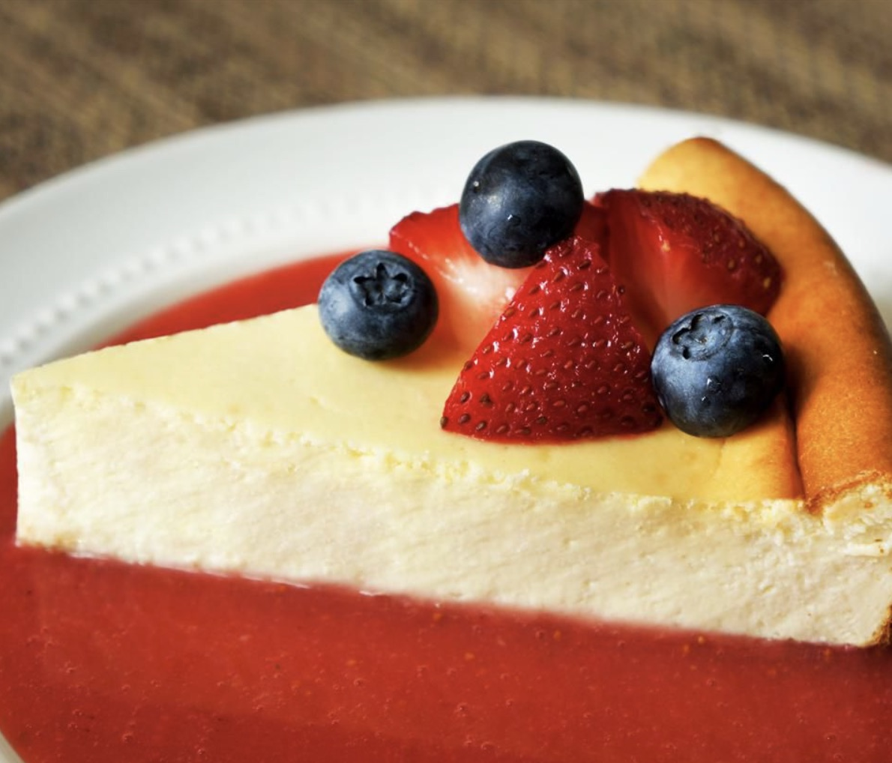

Cheesecake

Description
This New York cheesecake is dense and rich. It includes a great technique for letting the cheesecake finish in the oven so that no cracks form as the cake cools.
It's a favorite dessert of mine served with my fresh strawberry sauce.
Ingredients
- For the crust: graham cracker crumbs and melted butter
-
For the filling: sour cream, all-purpose flour, vanilla extract, cream cheese, white sugar, milk, eggs,
lemon zest, and orange zest
Steps
- Make the crust and press it into a prepared springform pan.
- Make the filling and pour it over the crust.
- Bake until the edges are puffed and the center is slightly jiggly.
- Let the cheesecake cool in the oven.
Back to Homepage
Source website